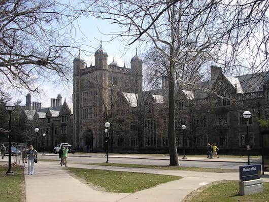
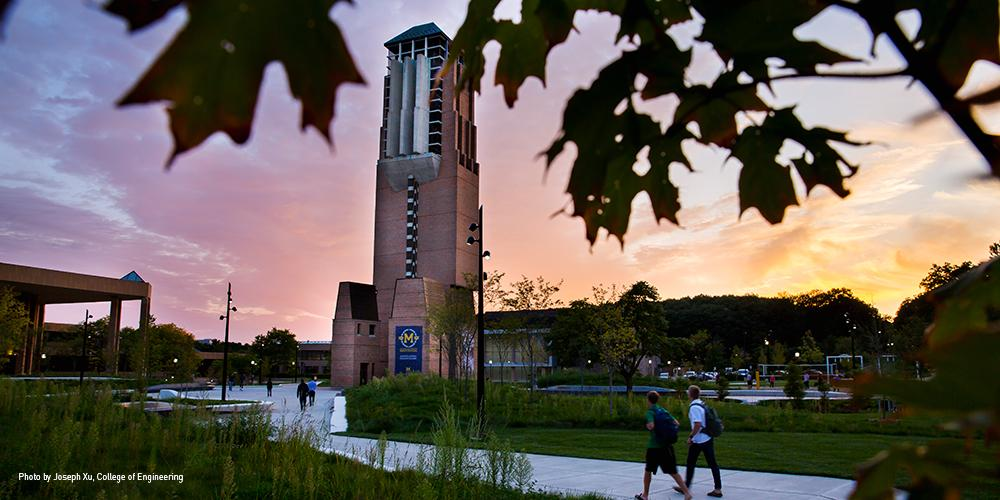

Ann Arbor is filled with beautiful, convinient paths to run, walk, and bike on. These are some of my favorite places to run. Click on an image to see another.
Nichols Arboretum

UM Central Campus

UM North Campus
Burns Park

Lillie Park
South of campus
Huron River
Gallup Park
Farm Park
Short runs around Ann Arbor
4 miles
4 miles
Medium runs around Ann Arbor
10 miles
Half Marathon (13.1 Miles)
Long runs around Ann Arbor
20 miles